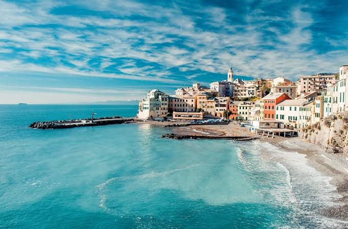

Tradição
O olho grego
O mati, amuleto azul em forma de olho, é usado para afastar o mau-olhado. Você vai vê-lo em joias, portas e até em barcos.
Os gregos chamam o próprio país de Ellada (Ελλάδα), e não de “Grécia”. Esse nome veio dos romanos.
O mati, amuleto azul em forma de olho, é usado para afastar o mau-olhado. Você vai vê-lo em joias, portas e até em barcos.

Em 28 de outubro, os gregos celebram o “Não” (Óchi) dito em 1940 a um ultimato durante a Segunda Guerra. Há desfiles e bandeiras por todo o país.

No teatro de Epidauro, construído há mais de 2.300 anos, uma moeda derrubada no palco pode ser ouvida das últimas fileiras.

Em qualquer ponto da Grécia continental, o mar está a poucas horas de distância. Não à toa, navegar sempre fez parte da identidade do povo.

A Grécia é um dos maiores produtores de azeite do mundo, e muitas famílias ainda cuidam de oliveiras centenárias.

A maratona moderna nasceu nos primeiros Jogos Olímpicos da era moderna, em Atenas, em 1896, inspirada na lenda do mensageiro de Maratona.